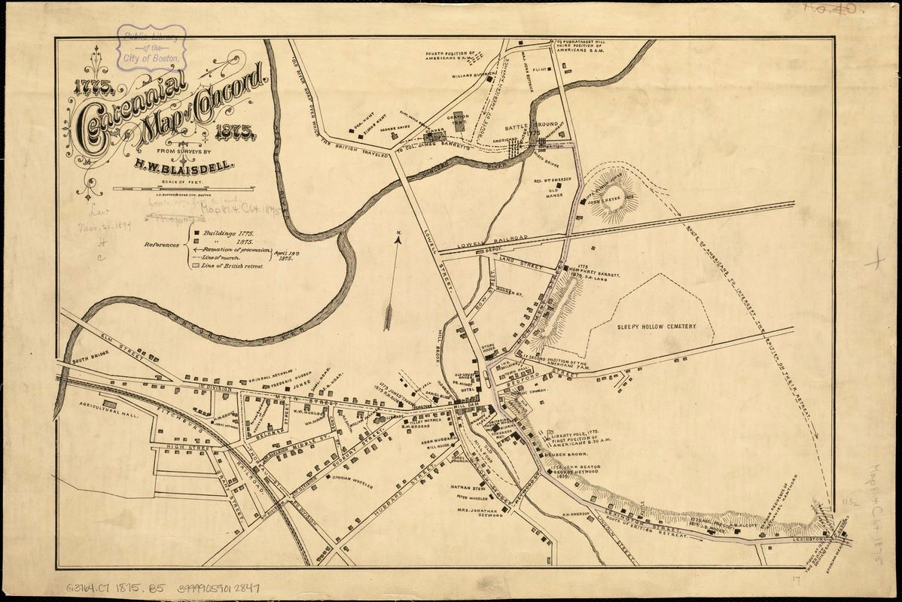
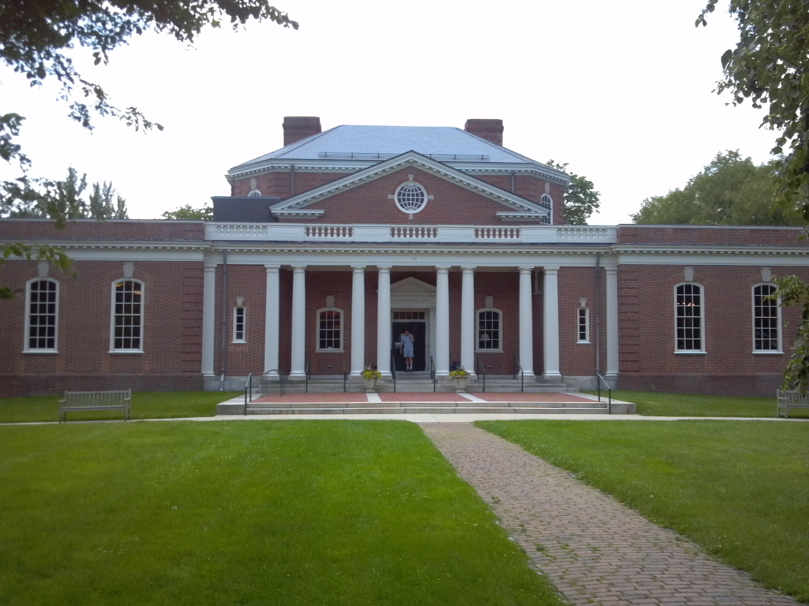
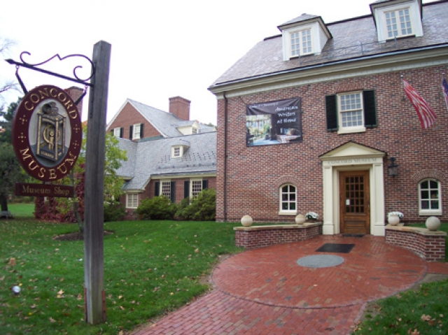
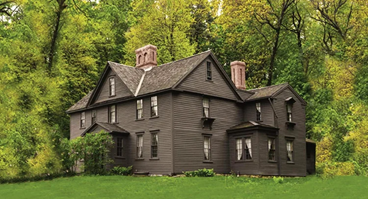

Welcome
Step into the pages of American literature as we wander through Concord, a town where ideas once set the world alight. From libraries brimming with inspiration to the quiet resting place of great thinkers, every stop hums with stories. Walk with Emerson, Alcott, and their kindred spirits. Let Concord remind you that books are not only read, but lived.
Concord Library
Start your literary adventure where the town’s stories live in books and whispers. Step into a haven where imagination still whispers between the shelves.
Sleepy Hollow Cemetery
Meet the resting places of literary giants — and maybe hear some poetic whispers! Wander among the gravestones, where Concord’s great storytellers rest yet still speak.

Ralph Waldo Emerson House
Step into Emerson’s world and let transcendental thoughts float around you.

Concord Museum
Discover artifacts of the town’s rich literary and revolutionary history. A cabinet of wonders where Concord’s past turns its own pages.
Louisa May Alcott Orchard House
End our walk at the home of Little Women — a cozy finale to our story-filled journey. Enter the cozy rooms where the March sisters first danced into the world.
Final stop
Every story deserves a moment of celebration, and today we add a bright page to Concord’s tale. As we walk in the footsteps of writers who shaped imagination, we honor Nida’s own journey: a life as full of character, warmth, and wonder as the books we cherish. May this birthday be a preface to many chapters yet unwritten.
🎉🎉🎉🎉🎉🎉🎉